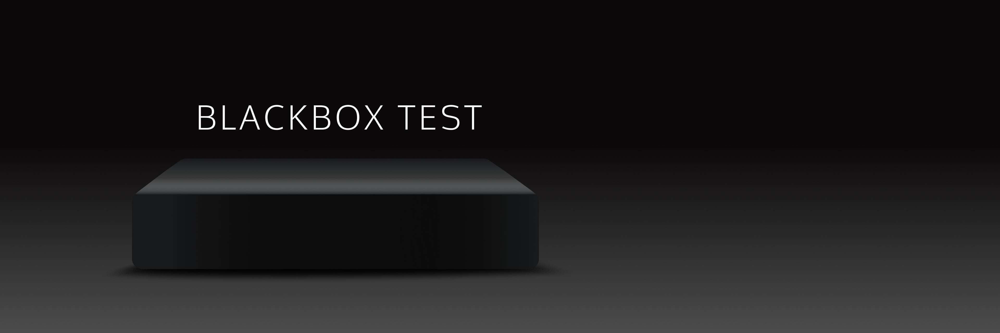
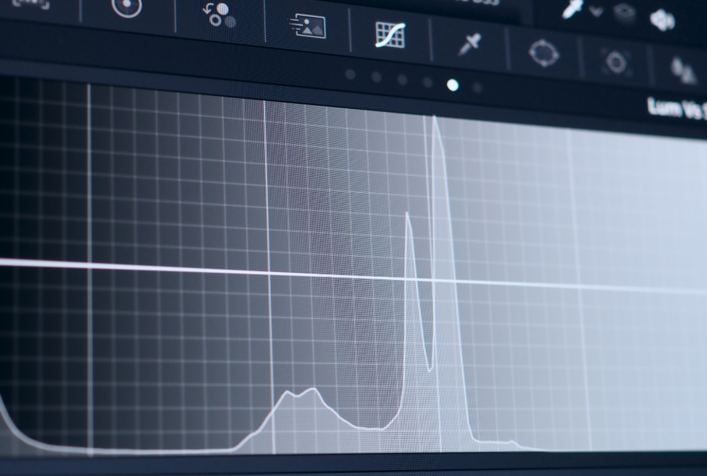
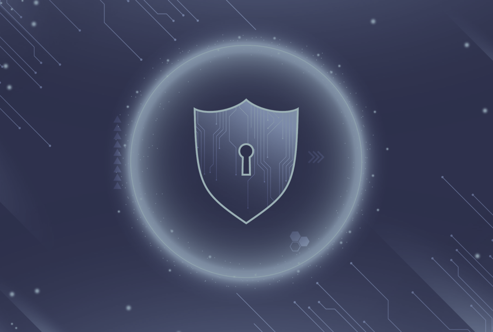
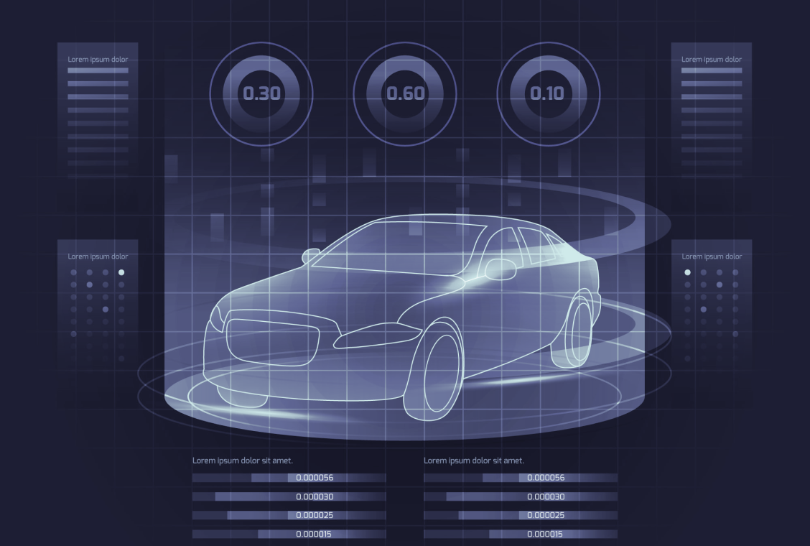
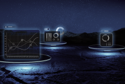
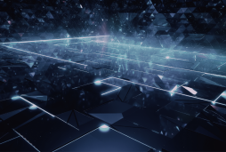
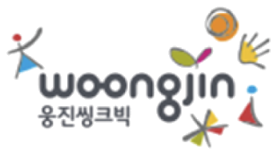
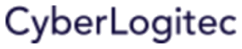

블랙박스 테스트
(Black-Box Testing)
소프트웨어의 요구사항과 명세서를 기반으로 테스트 설계 및 테스트를 수행하며, 이 과정에서 입출력 데이터를 분석하여
시스템의 적정성을 확인하는 동적 테스트 서비스입니다. 설계 및 구현 단계에 이르기까지 모든 소프트웨어 개발 단계에서 테스트가 가능합니다.
블랙박스 테스트는 소프트웨어의 품질을 보장하는 데 필수적인 방법입니다. 블랙박스 테스트를 통해 소프트웨어의 버그와
오류를 발견하고 수정할 수 있습니다. 또한 블랙박스 테스트는 소프트웨어의 사용성을 개선하고 사용자 만족도를 높이는 데에도 도움이 됩니다.
INPUT
- 아이디
- 비밀번호
- 로그인 클릭
OUTPUT
- 기대메인 화면 이동
- 실제메인 화면 이동✓
대상
요구사항 명세서, 사용자 기능과 사양
관점
개발자가 아닌 사용자·테스터 관점의 기능 검증
언어 독립성
프로그래밍 언어나 내부 구현 방식에 구애받지 않습니다
목적
입력에 대해 기대한 결과가 올바르게 출력되는지 확인합니다
대표적인 테스트 기법
입력과 출력만으로 결함을 찾기 위해, 대상과 위험도에 맞는 기법으로 테스트 케이스를 설계합니다.
01 / 07
동등 분할
Equivalence Partitioning입력값을 비슷한 성질의 그룹(동치 클래스)으로 나누고, 각 그룹을 대표하는 값만 뽑아 테스트합니다.
02 / 07
경계값 분석
Boundary Value Analysis오류가 자주 생기는 입력 범위의 최소값·최대값과 그 경계 근처 값을 집중해서 테스트합니다.
03 / 07
오류 예측
Error Guessing테스터의 경험과 직감으로 발생할 만한 오류를 예측해 검사하는 보조 기법입니다.
04 / 07
원인-효과 그래프
Cause-Effect Graphing입력 데이터 사이의 관계와 출력에 미치는 영향을 분석해 테스트 케이스를 도출합니다.
05 / 07
의사결정 테이블
Decision Table Testing여러 조건과 그에 따른 행동(결과)의 조합을 표로 정리해 모든 경우의 수를 테스트합니다.
06 / 07
상태 전이
State Transition Testing잠김 → 열림처럼 시스템의 상태가 바뀌는 흐름을 기준으로 테스트합니다.
07 / 07
비교 검사
Comparison Testing같은 입력에 대해 여러 버전의 프로그램이 같은 출력을 내는지 비교합니다.
업무 도메인
업무분야 전반에 걸친 업무 경험을 갖춘 티벨만의 품질 전문가들이 프로젝트에 최적화된 테스트 프로세스를 적용하여 최상의 결과를 제공합니다.





티벨과 함께하는 고객사


자주 묻는 질문
기능 테스트와 같은 말인가요?
기능 테스트는 대부분 블랙박스 기법으로 수행되기 때문에 비슷한 의미로 쓰입니다. 다만 블랙박스는 '내부를 보지 않는다'는 접근 방식을 뜻하므로, 성능처럼 기능이 아닌 특성을 확인할 때도 쓰일 수 있습니다.
화이트박스 테스트와 무엇이 다른가요?
블랙박스는 요구사항을 기준으로 입력과 출력을 확인하고, 화이트박스는 소스코드의 구조와 실행 경로를 직접 확인합니다. 두 방법은 서로 보완하므로 함께 쓰는 것이 일반적입니다. 화이트박스 테스트 보기
언제부터 블랙박스 테스트를 할 수 있나요?
요구사항과 명세서가 나오면 테스트 설계를 시작할 수 있어, 설계부터 구현까지 모든 소프트웨어 개발 단계에서 테스트가 가능합니다.
반복되는 회귀 테스트도 맡길 수 있나요?
네. 반복 비중이 큰 회귀 테스트는 테스트 자동화와 함께 운영하면 시간과 비용을 줄일 수 있습니다.
어떤 업무 분야를 테스트하나요?
금융, 영상, 보안, 자동차, 전자, 임베디드, 전자상거래, 통신, 플랫폼, 공공 등 10개 업무 도메인에서 경험을 갖춘 품질 전문가가 프로젝트에 맞는 테스트 프로세스를 적용합니다.